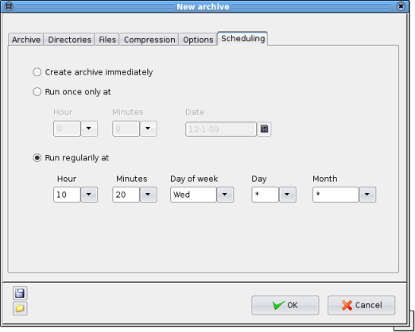

| Prev | Home | Next |
The "Scheduling" tab of the "New archive" window allows backup scripts to be executed automatically at a certain time or times.

Create archive immediately - the archive will be created immediately when the "Enter" key is pressed or the "OK" button is selected, unless the "Save script as" option has been selected, in which case the script will be written and the user will be asked if it should be executed.
Run once only at - the script will be executed once only, at the specified time on the selected date. This function uses the "at" utility. If the "atd" daemon is not running or the "at" executable cannot be found this option will not be available.
Run regularly at - the script will be executed as a "cron" task. A job is executed when the time/date specification fields all match the current time and date. The option "*" means "use all values". The example in the screenshot would run every Wednesday at 10:20
If the "crond" daemon is not running or the "crontab" executable cannot be found this option will not be available.
Further guidance on using cron scheduling:
| Prev | Home | Next |
| Compression | Up | Saved settings |